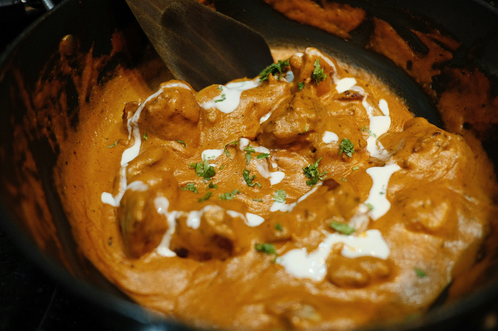

Sylo's Butter Chicken

Now lets travel to south asia and make one of indias most popular international dishes.
BUTTER CHICKEN!!!
Ingredients:
- 3‐4 skinless chicken thighs,
- 6 x green cardamom pods,
- Pinch dried fenugreek leaves
For the marinade:
- Fresh lemon juice (1tbsp),
- Sunflower oil (1tsp),
- Garam masala (1tsp),
- Ground cumin (1/2tsp),
- Ground coriander (1/2tsp),
- Paprika (1/2tsp),
- Sea salt (1/2tsp),
- Dried flaked chillies (1/4tsp).
For the sauce:
- Butter (2tbsp),
- 2 x grated garlic cloves,
- Fresh root ginger (15g),
- Garam masala (1tsp),
- Ground cumin (1/2tsp),
- Ground coriander (1/2tsp),
- Dried fenugreek leaves (1tbsp),
- Pinch dried chilli flakes,
- Caster sugar (1tbsp),
- Tomato purée (1 1/2tbsp),
- Double cream (100ml),
- Pinch flaked sea salt.
Method:
-
Preheat the oven to 220C/200C Fan/Gas 7.
-
Mix all the marinade ingredients in a small ovenproof dish (ideally cast iron) or a small roasting tin. Add the chicken and coat
thoroughly in the marinade. Roast for 10 minutes. (See the Recipe Tips, below, for air fryer instructions.)
-
While the chicken is cooking, make the sauce. Heat the butter in a medium non-stick frying pan. Cook the garlic and ginger over a
low heat for 1‐2 minutes, or until softened but not coloured, stirring constantly. Add the garam masala, cumin, coriander and
turmeric and cook for 30 seconds, stirring.
-
Sprinkle over the fenugreek and chilli flakes and cook for a few seconds more, then add the caster sugar and tomato purée. Cook for 2
minutes, stirring constantly.
-
Add 6 tablespoons cold water and the cream and bring to a simmer. Season with salt, to taste.
-
Stir the chicken into the creamy sauce. Return to the oven for a further 10 minutes, or until the chicken is tender and the sauce is bubbling.
-
Just before the chicken is done, roughly bash the cardamom pods in a pestle and mortar and remove the husks. Grind the seeds to a powder. Sprinkle
the ground cardamom and remaining fenugreek over the butter chicken just before serving.
To go back home click here.